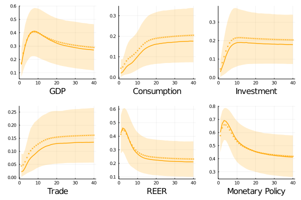
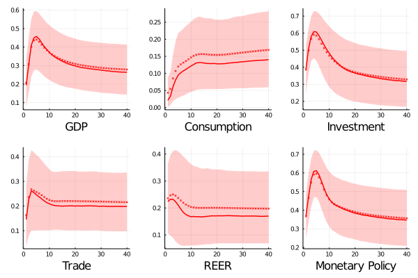
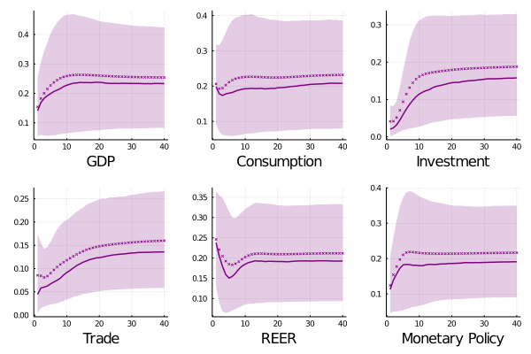
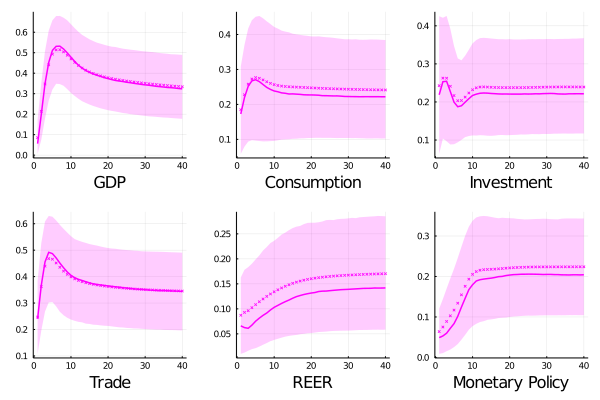

Global shocks ....
 Both, consumption and investment are explained in small portion by fundamental shocks in the short run (5 and 11 percent during the first year) with an increasing path until achieve a participation around 18 percent in the long run. On thw other hand, the global shocks looks be more determinant on production explaining more than one quarter of the total variability with a maximum after 8 quarters (above 40 percent).
The effect on financial related variables - effective real exchange rate, and monetary policy interest rate is higher and appears more promptly, with an instantaneous contribution of 42 and 59 percent, respectively, (28 and 56 percent after 8 quarters). In the long term, the predictability of these variables are driven by fundamental global shocks by around 20 and 40 percent respectively. Their contribution in trade balance volatility is small in comparison with the previous described result, with an increasing path and a final share of 13 percent.
 During the first two years, global shocks has less effect over consumption rather than investment and total output, with an explanation power that achieved 12 percent. In the same period, the effect on the GDP variability starts close to 18 percent (39 percent for investment) to finish around 38 percent (and 50 on investment). In the long run, investment on Canada is the most explained real variable among the selected ones, with an exposure of 31 percent (26-13 for output and consumption). The patterns exhibit by them are on par with the rest of developed economies, reflecting the velocity in the absorption of future information that occurs in these countries.
On the other hand, the volatility of interest rates explicated by fundamental (global) shocks exhibits a similar behavior with an initial value of 59 percent, a maximum of 68 percent after one year decreasing until more than 40 percent of the total variability.

In almost all the considered countries; approximately, one quarter of monetary policy dynamics were tied to fundamental global innovations. However, interest rates fluctuations seems more exposed in the Norway economy, where around one third of its volatility is due to these conditions. Unlike this, the rest of their aggregates exposed similar long run explained levels of variance (close to 20 percent) regards other small open developed markets.
This is only for visual purposesThis is only for visual purposesThis is only for visual purposes This is only for visual purposesThis is only for visual purposesThis is only for visual purposes This is only for visual purposesThis is only for visual purposesThis is only for visual purposes This is only for visual purposesThis is only for visual purposesThis is only for visual purposes This is only for visual purposesThis is only for visual purposesThis is only for visual purposes

Norway predictability response to global shock shows two particularities. First, the portion of trade balance explained by these innovation is the highest among the developed economies with a long run contribution above one third, and a maximum of almost one half after one year.(This result has the same flavor than Colombian's results and it is because both are mostly crude oil exporter 45, and 59). Second, the global shock contribution on exchange rate variability has an increasing pattern, which differs respect the rest of developed countries (but again on par with colombian results)
Both, consumption and production are mostly affected in the medium run with a fraction of 0.53 and 0.26 of their fluctuation explained by these shocks. in The long run they drive around one third of GDP volatility and 22 percent for consumption. Finally, their participation on investment is between the range 18-24 percent during the horizon.
Global shocks ....
If you have any doubt, suggestions, or simply want to talk, you can contact with me.